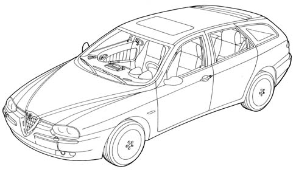

Introduction - FITTINGS
- Path
- Descriptions > 70 FITTINGS > Introduction - FITTINGS
- Kind
- system description
- Applies to
- all engines; all production periods
- Interactive page
- https://sloeber94.github.io/elrnDB-a156/en/#/3239235
Applies to: all engines; all production periods; only with equipment: Sedan
The car's styling is the state-of-the-art as far as Alfa Romeo tradition is concerned.
All body parts are designed to enhance the car's sporty image. Innovative features blend perfectly with retro elements reminiscent of Alfa Romeo's illustrious past.
Main new features are as follows:
- The front end is dominated by a highly distinctive front shield
- Light clusters built into the front with round reflectors, as on classic sports cars.
- The V shaped bonnet lid stems from the shield and connects with the side panels.
- Bumpers integrated in the bodywork.
- Front number plate placed to the side to improve engine cooling
- High panel surface area compared with the reduced glazed surface area to increase the sports image.
- The front handle dominates the entire side view
- Rear handle built into the door frame to make the car look like a coupè
- Short, fleeting rear end
- Rear number plate in the bumper
- Division of the internal spaces between the driver, front passenger and rear passengers
- Personalized, linked internal lines
- Innovatively-profiled high-tech wraparound seats improve containment for a safer, more comfortable sporty drive.
Applies to: all engines; all production periods; only with equipment: Station Wagon
To complete the range and satisfy a clientele who are increasingly aware of the practicality and dynamic use of the vehicle, the 156 Sport Wagon version has been created, a model which has achieved great success on markets throughout the world.
The beautiful and captivating line suggests the concept of sportiness, which already characterizes the saloon while giving great personality to the Wagon.
The strong points which have determined the success of the saloon remain unchanged:
- technical and stylistic solutions,
- range and content,
- road-holding and performance,
- safety,
- aerodynamics,
- robustness and reliability.

Applies to: all engines; all production periods
For more information on the components, see the descriptions for the individual sub-assemblies.